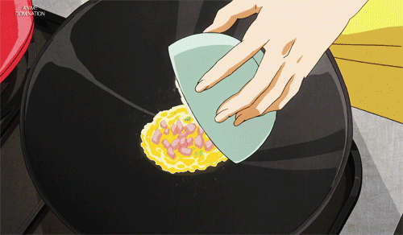
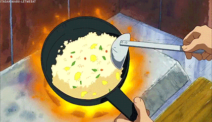
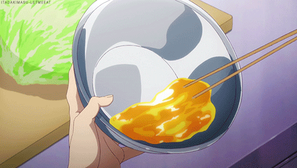
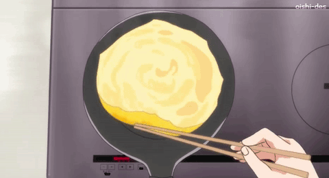
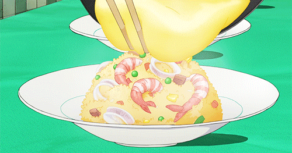

A fluffy, golden omelet blanketed over savory ketchup-flavored fried rice.
It's the ultimate anime comfort meal that feels like a warm hug in a bowl.
Grab your ketchup bottle and get ready to draw a heart on top of this
iconic, "perfectly pillowy" Japanese classic!
Ingredients
For the fried rice
1 cup Cooked rice (preferably day-old)
1/2 Onion, finely chopped
1/2 cup Chicken breast or thigh, cut into bite-sized
pieces
2 tbsp Ketchup
1 tbsp Soy sauce
1/2 cup Frozen peas and carrots (optional, for color)
For the omelette
2 Large eggs
1 tbsp Milk or heavy cream (for silkiness)
1 tsp Butter or oil
Instructions
Step 1: The Ketchup Rice
Heat oil in a pan. Add the onions and chicken, cooking until the chicken
is no longer pink.
Add the rice and frozen vegetables. Stir-fry for 2-3 minutes, breaking
up any rice clumps.

Add the onions, rice and chicken to the pan.
Add the ketchup and soy sauce. Mix thoroughly until every grain of rice
is coated in a vibrant orange-red hue.

Cook the rice in the wok.
Pack the rice into an oval-shaped bowl and flip it onto the center of
your serving plate to create a neat mound.
Step 2: The Omelet
Beat the eggs and milk together in a small bowl.

Beat the eggs and milk together.
Melt butter in a non-stick pan over medium-low heat. Pour in the egg
mixture.
Gently swirl the eggs with chopsticks until they are mostly set but
still slightly creamy on top.

Cook till omelet is creamy on top.
Slide the omelet out of the pan directly onto your mound of rice.

Place omelet on top of the rice.
Step 3: The Finishing Touches
Drizzle a zig-zag of ketchup over the top (or write your name if you're
feeling fancy!).